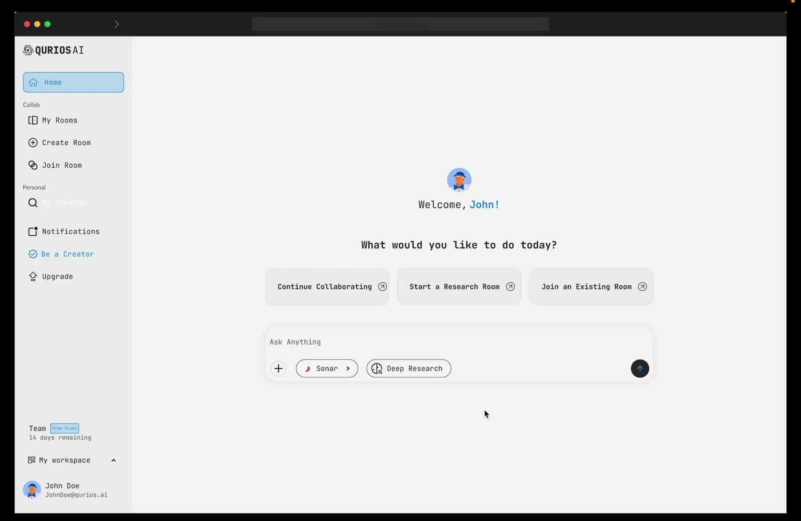
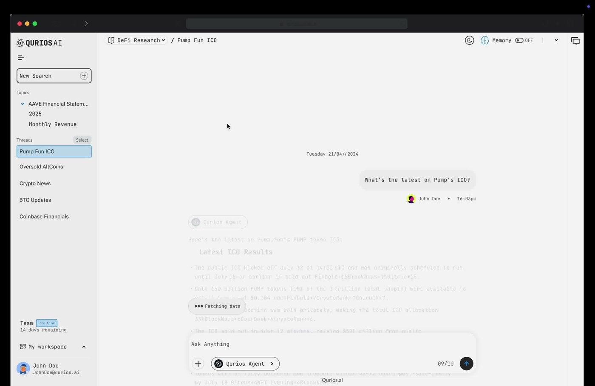
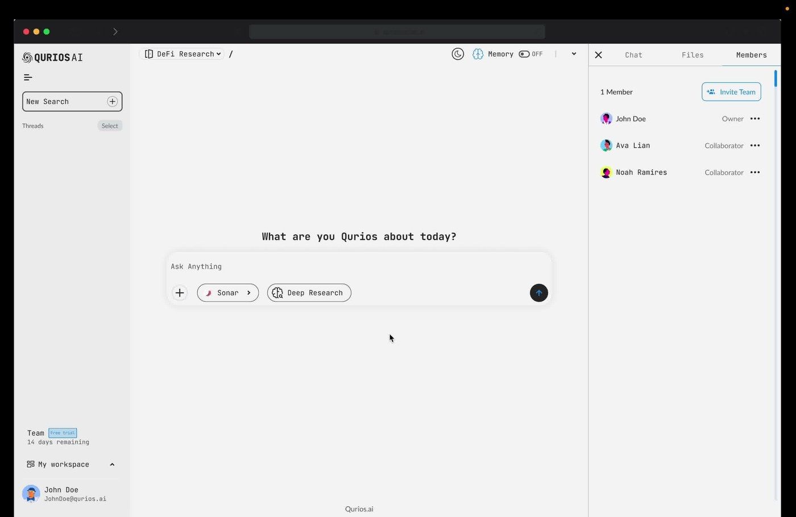
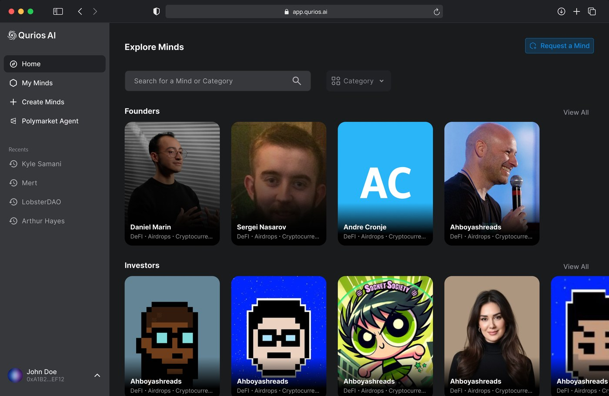
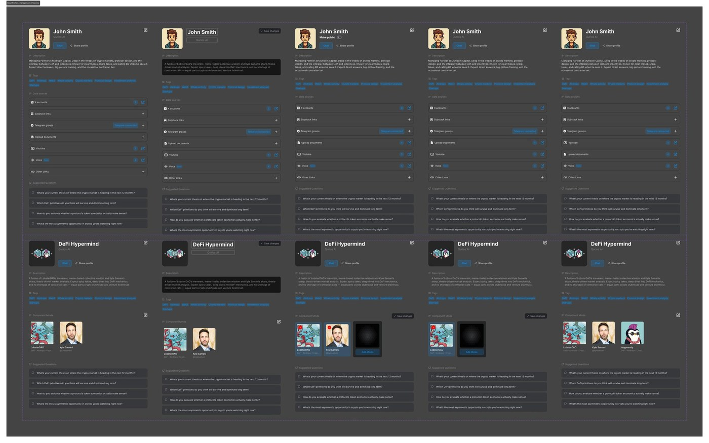
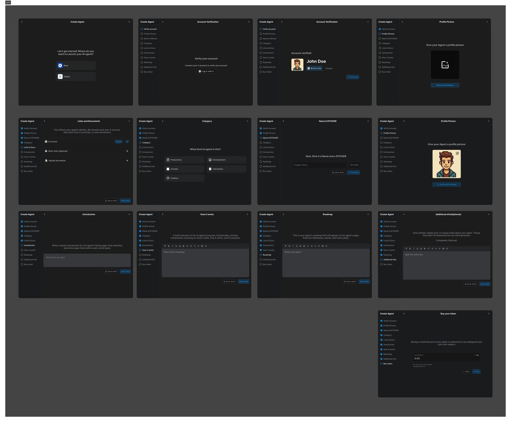
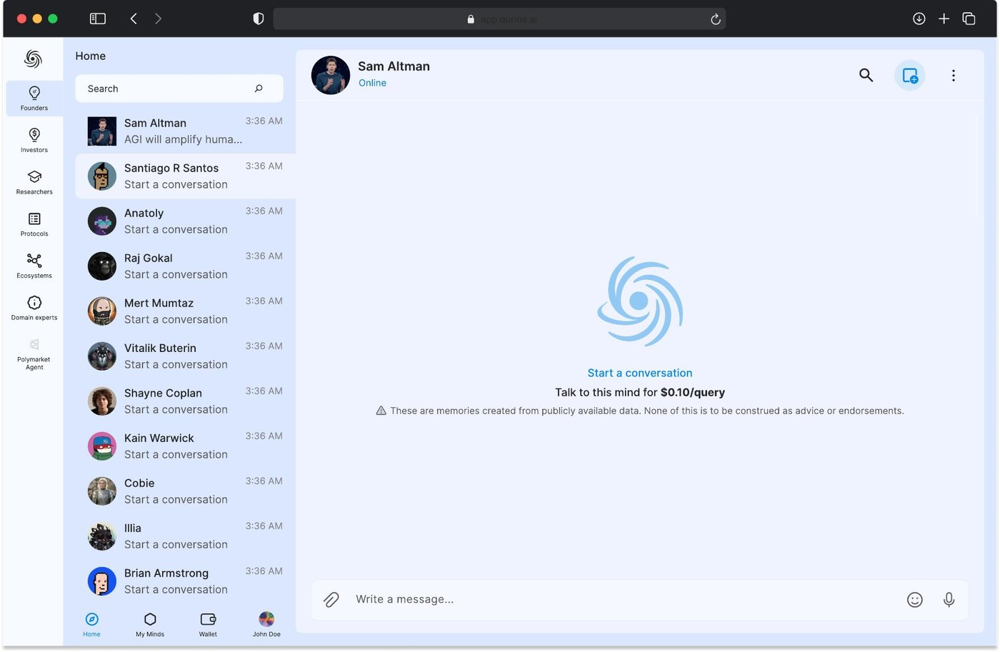
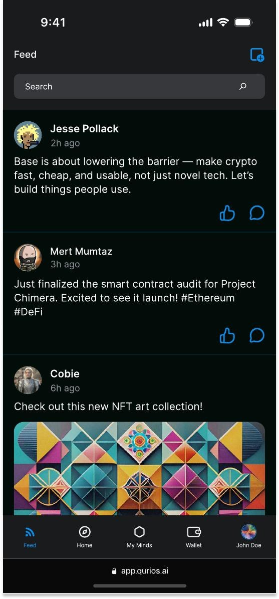
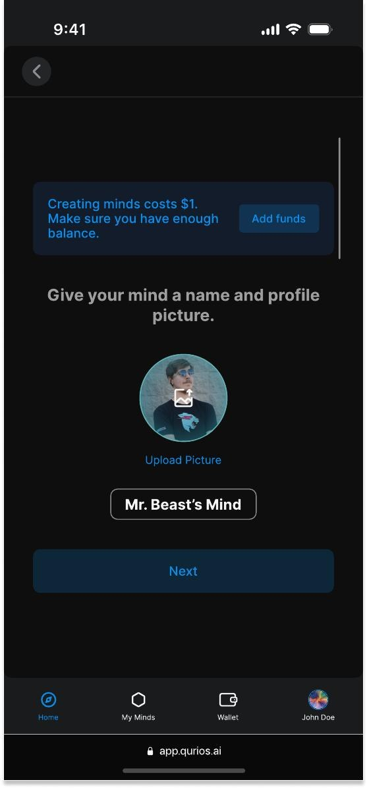
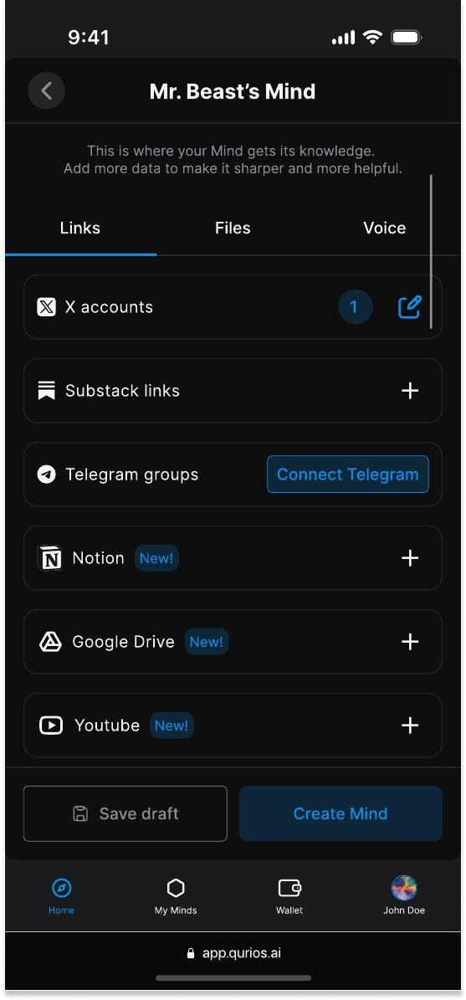

"People don't want generic intelligence.
They want specific people's intelligence."
That was the thesis behind Qurios. AI had gotten powerful, but it was still personality-blind. Every ChatGPT conversation starts from zero. Every model speaks in the same voice. Nobody owns their knowledge, nobody earns from it.
I spent 8 months as Lead Designer taking Qurios from a shared research tool to a platform where creators can monetise their expertise through conversational Minds — AI that actually sounds like them.
The product pivoted twice. I designed all three iterations.
Platforms monetise attention, not expertise. A DeFi analyst with 50k followers earns less per month than a barista. A researcher with 10 years of domain knowledge can't charge for a conversation they're already having 50 times a day.
Content has a half-life problem. A thread on X dies in 18 hours. A Substack essay peaks in two days. But the insight behind it is still valuable two years later. There's no infrastructure to keep it earning.
"Only 5–7% of creators earn more than $100 a month. The other 93% are producing content for platforms that keep the revenue."
The original product was a collaborative research tool. Teams could create shared rooms, upload context, and research DeFi topics together using the Qurios Agent — a web-connected AI that surfaced sources, cited claims, and built shared knowledge threads. Think Notion meets Perplexity, with a memory layer.
It was clean. Designed in a light mode with a linear hierarchy — sidebar for rooms, threads panel, central research canvas. The Memory toggle let teams switch between session-scoped and persistent memory. The Qurios Agent could pull live data, compare protocols, and format results with citations.



"The rooms model was powerful for teams — but Qurios' actual opportunity wasn't teams. It was the 50 million individuals with expertise no one could access at scale. We were building for the 0.01% instead of the 99%."
The second iteration introduced the core concept: Minds. Not rooms. Not research sessions. Individual, persistent, monetisable AI agents built from a creator's own content. Connect your X account, your Substack, your Telegram, and the system builds a Mind that thinks like you.
Explore Minds by category — Founders, Investors, Researchers, Protocols. Click a Mind. Talk to it. Each query costs a fraction of a dollar and goes directly to the creator.
But we over-indexed on crypto mechanics. Mind creation was a 10-step flow: verify your X account, upload a profile picture, name your Mind, add a sticker (ticker symbol), select categories, upload links and documents, write an introduction, explain how your Mind works, write a roadmap, and optionally buy your own token. We were asking creators to launch a project, not build a product.



"We killed the tokens. A creator shouldn't need to understand staking contracts to share their expertise. The best onboarding is the one the user doesn't notice. We needed to get from 10 steps to 2."
The final product stripped the complexity down to what actually mattered. Give your Mind a name and a photo. Connect your sources. Done. Wallets are auto-generated in the background — users never see a seed phrase. Token mechanics exist, but they're never surfaced until the user wants them.
The visual language shifted to a Telegram-style messaging interface — familiar, fast, zero learning curve. Every Mind looks like a contact. Chatting with Sam Altman's Mind feels like texting a really well-read friend. The price per query ($0.10) is visible but minimal — it doesn't dominate the interface.
A social feed was added as the discovery and monetisation engine. Qurios surfaces posts from creators you follow on X, Substack, and YouTube. Clicking any post opens a conversation with their Mind. Engagement earns the creator money. The feed is the funnel.




Design is mostly about what you don't build. Here are the decisions that mattered most.
Understanding the technical architecture wasn't optional — it directly shaped every design decision. The interface had to reflect the power underneath it without exposing the complexity.
Every Mind runs on a three-layer memory architecture: a Vector Store for semantic search, a Relational DB for Mind profiles and relationships, and a Cache Layer for hot memory and query optimisation. The AI layer runs on Gemini — normalising content, extracting personality dimensions, synthesising memory.
My job was to make 11 personality dimensions and a proprietary memory graph feel like "just talk to it."
The external video editing team we'd hired for the alpha launch couldn't deliver — 48 hours before the deadline. I stepped in and produced the motion graphics myself in After Effects.
Title card sequences, UI screen reveals, animated data visualisations, timed to the voiceover. The video went out on launch day as planned. On time. It's still live.
Three iterations over 8 months. A product that pivoted twice and shipped a better version each time. The app, the marketing site, the brand identity, and the launch video — all mine.
Qurios taught me that the hardest part of product design isn't building features — it's recognising which ones are getting in the way. Three iterations. Three honest looks at what wasn't working. The final product exists because we were willing to throw away good work for better work.
EV rental platform. Rebuilt the booking flow. Checkout time dropped 40%.
View case study →